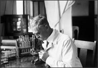

Karl Landsteiner
1868–1943
Karl Landsteiner, born in Austria in 1868, studied medicine at the University of Vienna and then spent several years conducting research in some of the most celebrated laboratories in Europe. He returned to Vienna to work at the Institute of Pathology, simultaneously conducting his own investigations into blood and immunology.
Landsteiner made numerous contributions to the fields of pathology, bacteriology, and immunology, but he is best known for his work on blood types. In 1901 he demonstrated that transfused blood sometimes caused the recipient's blood to clump. He speculated that there must be different types of blood, and that some blood types must be incompatible with others. He classified human blood into three groups: A, B, and O. (The fourth group, AB, was added soon after.) This work made possible the first successful blood transfusions.
In 1908 Landsteiner was appointed head of the department of pathology at a Vienna hospital, where he stayed until 1919. After the end of World War I, Landsteiner left Austria and moved to The Hague in Holland. Later, he relocated to the Rockefeller Institute for Medical Research in New York, where he continued to study immunology and blood and to refine his earlier ideas.
In 1930 he received the Nobel Prize for Physiology or Medicine. He officially retired in 1939, but never completely stopped working; in 1940 he and a colleague discovered the Rh factor—a discovery that has helped save the lives of fetuses with blood that is incompatible with their mother's. He continued his research right up until his death in 1943, when he suffered a heart attack in his lab.